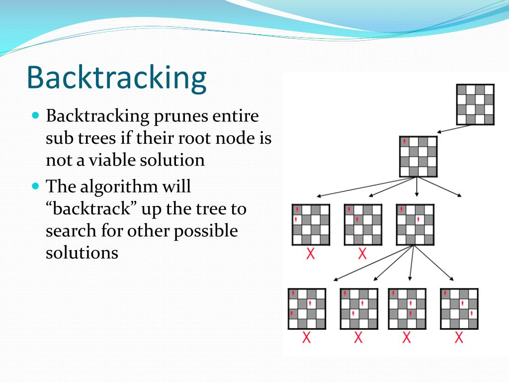
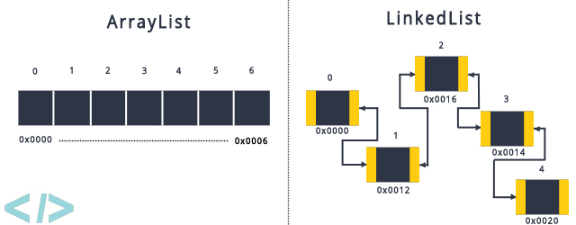

My Projects
Check out some of my projects...
Sudoku Solver (Python)

Description: Applied the backtracking algorithm to find a solution for
any solvable game of sudoku. Also, went through the process of how the
algorithm solves the game. By drawing it on paper and explaining my
thoughts.
Project
Github
Linked List/ Array List Project(Java/Class Project)

Description: Created a class for linked list and array list with a
partner. My partner did the array list class while I worked did the
linked list class. Then we came together with the code we wrote to
implement the functions into a class that timed the functions for big
O analysis purposes.
Project
Github
AI Chatbot (Python)
Description: Created a chatbot that uses neural networks, and
tensorflow to find the best answer when given a question. This chatbot
can answer questions relevant to my life/career.
Project
Github
Data Science (Python)
Description: Created a data science project to find the average salary
for a data scientist. In this project I did web scraping, data
cleaning, EDA, model building and productionization. The tools used
for this project were jupyter notebook, anaconda spyder, pandas,
numpy, sklearn, matplotlib, selenium, flask.
Project
Github
Website Portfolio (HTML,JavaScrpit,CSS)
 Description: Developed this very website you are on right now. This is
a responsive website that showcases my own portfolio. The webiste is
built in HTML5, JavaScript, CSS this shows my skills as a programmer
and my ability to learn on my own. Also, shows my talents as a website
designer.
Project
Github
Description: Developed this very website you are on right now. This is
a responsive website that showcases my own portfolio. The webiste is
built in HTML5, JavaScript, CSS this shows my skills as a programmer
and my ability to learn on my own. Also, shows my talents as a website
designer.
Project
Github
Description: Developed this very website you are on right now. This is
a responsive website that showcases my own portfolio. The webiste is
built in HTML5, JavaScript, CSS this shows my skills as a programmer
and my ability to learn on my own. Also, shows my talents as a website
designer.
Project
Github